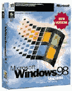

|
|
| 当前位置：电脑报电子版 > 1999 年 > 47 期 > 软件世界 > 千禧回眸OS |
| 《 千禧回眸OS 》 |
| 当新世纪的足音逐渐清晰可辨的时候，人们的“世纪末情结”自然而然地一天比一天变得强烈起来。只有在世纪交接的刹那，人们才如此真切地感受到时间流逝不再来，光阴荏苒，弹指一挥。在一个千年即将结束，另一个千年姗姗而来的时候，追思往昔、展望未来不经意间成为世纪末的“流行新时尚”。 当今发展势头最为迅猛的IT产业可谓生机盎然，作为IT支柱的软件业当仁不让地成为焦点中的焦点。在所有类型的软件中，操作系统（OS）是最为特殊也最为重要的软件类型。可以毫不夸张地说，OS的发展方向决定了整个软件产业未来的走向和趋势。因此，在这个特殊的时刻进行一次操作系统的千禧“回眸”也就具有了特殊的意义。 参加此次千载难逢的OS千禧“大阅兵”的操作系统阵容十分强大，Windows 2000、Linux、Windows 98和MacOS等将逐一亮相，这几乎囊括了目前所有最为流行的个人电脑操作系统。除了目前还“犹抱琵琶半遮面”的Windows 2000之外，另外的几种OS正不知疲倦地运行在世界各地数以亿计的个人电脑上，极大地减轻了人们的工作强度、提高了商业运作的效率。它们的存在为信息社会的来临打下了坚实的基础，提供了现实的可能，让普通人的生活和高科技的距离越来越短！ Windows 2000 ——操作系统“巨无霸” Windows 2000是一个体积硕大无比的“巨无霸”级操作系统。据称，其源代码达到了天文数字般的创纪录的2200万行，是有史以来最为复杂的操作系统。它秉承了微软“泡泡件”的优良传统，原本许诺定在今年年中发布的时间表被一推再推，先是改到年终岁末，直到最近才确定最后发行日期。按照微软的最新说法，这张“空头支票”要等到2000年2月15日到17日举办的Comdex春季大展才能最终兑现。届时，微软计划举办Windows 2000专场发布会，发布这个此前被称为NT 5.0的操作系统的正式版本。微软试图一统操作系统市场天下的野心由来已久，当Windows 3.x、Windows 95/98在桌面平台上所向披靡之后，“心比天高”的比尔·盖茨将下一个目标锁定在OS中高端市场上就成为顺理成章的事情。微软虽然在面向最终用户的桌面系统市场占据绝对的优势，但它一直以来都因为产品质量欠佳、“臭虫”无数而遭人垢病。在面向中高端企业级应用领域，微软虽然提供了NT 4.0的“解决方案”，但同样也表现平平。微软之所以能捆住大批的使用者，根本的原因在于“视窗”平台下数量庞大的的应用程序。 Windows 2000这个被微软吹嘘为“未来的操作系统”的产品就是其试图挽回声誉，并确立中高端领导地位，整合和统一操作系统软件市场的“胜负手”。正像IDC评论员Daniel Kusnetzkg提到的那样：“Windows 2000的代码有80％是新的。它简直就是个新操作系统。”来自CNET的消息称微软的5000名全职开发人员在每周7天、每天24小时不停地进行Windows 2000的开发工作，这个软件巨人希望其巨大的投资能够使这个系统成为有史以来最强大、最灵活的操作系统。毫无疑问，Windows 2000将成为Windows 95上市以来，微软历史上最重要的软件升级行动。它很可能决定着未来十年PC操作系统的命运和走向。在微软与美国司法部的“反托拉斯”诉讼难解难分，微软的垄断行为被“事实认定”的多事之秋，Windows 2000的命运就更加值得关注。 长期以来，在操作系统软件市场中，微软一直是“两线作战”：低端面向最终用户的Windows 95/98和高端面向企业的NT。然而，要命的是，这两个操作系统并非完全兼容。95/98平台下16位与32位的“混血”应用程序，在纯正32位“血统”的NT上很难运作如常，有些则根本无法运行。“兼容并蓄”的路线为微软带来了最大的市场份额，也让其背上了沉重的负担。即将推出的Windows 2000将成为这一历史的终结者，16位的DOS应用被彻底地抛弃。包含专业、服务器、高级服务器、数据中心服务器等四个不同版本的Windows 2000将采用相同的32位核心（其中，最高端的数据中心服务器将拥有64位内核），这将从根本上解决应用的版本兼容性等问题。视窗系列从此走向最终的统一，Windows 2000有效地整合了Windows98的应用性和NT的稳定性，而且借鉴了Unix操作系统的很多特性和优点，确实不可小觑。2000专业版继续大众化的“平民路线”，锁定的是桌面级应用，崭新的内核将给其带来前所未有的稳定性。服务器版运行于企业服务器，在专业版的基础上集成了强大的网络应用和Web服务。高可靠性、高扩展性和灵活的可管理性，使其成为运行复杂的企业级应用软件的优秀候选平台。 微软在中高端市场上对Unix的宝座觊觎已久。虽然随着NT 4.0的推出，微软从Unix手中夺走了数量可观的市场份额，然而Unix的王者地位仍旧不可撼动。在安全性和可靠性要求非常苛刻的企业级应用中，NT的踪影还是较难寻觅的。最具讽刺意味的是，被微软收归旗下的最大的免费Web电子邮件站点HotMail使用的操作系统也不是NT。微软在几年卧薪尝胆后全力主推的跨世纪操作系统Windows 2000的矛头直指Unix，高端的决战已经一触即发！螳螂捕蝉，黄雀在后，正当Windows 2000卯足了劲儿，要向Unix阵营发起总攻的时刻，一匹OS黑马却从半地里杀将出来，挡住了其的去路！这就是阅兵队伍中紧随Windows 2000之后出场的Linux。 Linux——操作系统“新贵” Linux其实是大名鼎鼎的Unix的一个变种，在很大程度上与Unix有着割不断的联系。它与Unix的最大区别在于：Unix是某些公司的专有产品，而Linux则完全免费，而且系统的所有源代码都能够轻易获得。Linux的诞生颇具传奇的色彩。1990年在芬兰赫尔辛基大学求学的Linus Torvalds对他所用的那个用于教学目的的MINIX系统（一个可以在PC上运行的小型Unix系统）很不满意。于是年轻气盛的Linus开始了一个雄心勃勃的计划：编写一个全新的操作系统！Linus的个人爱好和因特网上为数众多的爱好者的参与，最终创造出了一个伟大的操作系统，Linus把它称为Linux。在1994年正式推出的Linux 1.0版本标志着Linux的诞生。经过世界各地成百上千的程序员八年多的辛勤劳动，今天Linux这个完全免费的操作系统终于“修成正果”，开始向主流操作系统领域进军。目前，市场上较为流行的Linux发行版本包括：Red Hat Linux、SuSe Linux、Turobo Linux等近十余种。其中，最著名的也是市场份额最领先的则是Red Hat的Linux套件，其最新版本为6.1。 目前的Linux已经完全具备了一个高级操作系统的所有特性：支持抢先多任务、对称多处理和完全的POSIX兼容性。更为重要的是Linux得到了来自各方的大力支持，为数众多的业界著名厂商（包括IBM、SUN、Oracle等）都纷纷表示加入Linux阵营，并且计划或已经推出了Linux版本的重量级软件产品。业界巨头的认可就像发出的一张“特殊通行证”，使Linux从黑客手中鼓捣的“玩具”一夜之间就幻化成主流操作系统。其实，我们只要稍作分析就能够发现，Linux的“得宠”无非是对微软恨之入骨的所谓“反微软联盟”，在Java这张收效甚微的王牌之后的又一轮“倒微”攻势而已。平心而论，Linux与Windows相比也确实拥有一定的优势，作为服务器操作系统，高效、安全、稳定的Linux足以替代NT 4.0；但在桌面应用领域，Linux想要撼动Windows的绝对统治地位却无疑是前路漫漫。 Linux只是一个普通的开放源码（Open Source）操作系统，在并非经过市场和用户选择的情况下，被几家敌视微软的厂商当作“武器”进行炒作，不由得我们不怀疑最近一段的“Linux热潮”的纯洁性了。Linux系统本身其实并没有任何过错，但是，作为长期标榜“公开、自由”的自由软件阵营的旗舰产品，如此迅速地与那些“各怀鬼胎”的厂商搅到一块儿，Linux是不是有一点被人利用的嫌疑？不过，我们也不能过多的抱怨，毕竟Linux为我们带来了微软之外的另一种不算太坏的选择。那些习惯了将操作系统与Windows联系在一起的用户，也像哥伦布发现“新大陆”一般，知道了其实PC的OS并不仅仅只能“微软制造”。从这种意义上讲，Linux好比一缕吹入操作系统领域的“清风”。 Windows 98——花里胡哨“市场牌” 我们不能不继续关注现在统一着全球近90％以上桌面的Windows 98。这个有史以来最为花哨异常的操作系统有个非官方的中国名字——“温馨酒吧”，仔细想想也还确实有些道理。这个于1998年7月推出的系统其实只是微软用于Windows 95和2000之间过渡期的一个升级产品。 Windows 98虽然号称在95的基础上进行了一两千处的“创新”，但是在使用了一段时间之后，很多人才发现Windows98仅仅是一个Windows95＋IE 4的拙劣的“过渡产品”。对一般用户而言，他们所得到的只是一个和IE浏览器捆绑更为紧密、界面更为花哨的Windows 95。而对于那些购买Windows 98中文版的用户来说，他们更是以数倍于国际平均价位的价格买到了一个并不比95稳定多少的操作系统，“蓝屏”和死机发生的次数依然故我。相对于Windows98来讲，笔者就更为喜欢在Windows 95第一版基础上改正了很多Bug后推出的OSR 2版本（俗称Windows 97）。OSR 2在稳定性、安全性方面比95和98都要高。 现在回头再想想，会发觉Windows 98更多的只是微软市场行为的“升级”，而并非其鼓吹的那样完全是技术方面的升级了。当然，Windows98的千余项“创新”也并非完全的空穴来风。其中最重要的几个特点是：全面集成因特网功能的Web－Ware用户界面使本地和上网操作的界面趋向统一；增强的因特网套件工具使用户在因特网时代更加游刃有余；全新的FAT 32文件系统能够更加有效地利用磁盘空间；对新一代硬件的更广泛支持，包括多显示器（Multiple Display Support）、通用串行总线（USB），AGP图形加速端口、高级配置电源接口（ACPI）、DVD、及PCMCIA卡和红外数据传输（IrDA）。一言以蔽之，Windows 98可以让你变得更摩登。要赶上潮流，你当然要选择Windows 98了。 美国时间1999年6月10日，微软在Windows98上市近一年之后，推出了第二个版本Windows 98 SE。该版本与前一版本相比速度更快，操作更简单，更方便上网。微软为了保住现有的市场份额，比以前任何时候都更加重视软件的简单易用性。 在这个升级版本中，能够允许多个用户共享一个Internet连接同时上网， 这一大特色是专门针对家庭用户上网而设计的。 另外，它还加快了电脑的开机和网上浏览的速度。Windows98 SE对新用户的售价是109美元，对Win98的老用户的升级价格为19.95美元。另据最新消息，微软在加紧Windows 2000上市前的最后冲刺的同时，还在开发被称为“千禧版本”的Windows Millennim Edition 。据称，该版本将成为Windows 95/98系列的终结者。目前微软还没有透露该产品的详细技术细节。 Mac OS——卓尔不群的“天使” 幽雅地行进在操作系统队伍还有一个拥有“天使”般面孔的系统——来自Apple的卓尔不群的Mac OS。引发个人电脑革命的Apple多年以来，一直奉行“所想不同”（Think Different）的创新理念，奉献给世人一个又一个的“精彩”。从早期辉煌无限的Apple Ⅱ（苹果二世）、后来创意无穷的Macintosh直到最近光芒四射的“个性之选”iMac，无不折射出Apple非凡的创造力。有人曾经这样评价Apple的工程师：那些家伙根本就不是什么程序员，他们完全是一群艺术家！的确，Apple已经将个人电脑的设计和制造上升为一门精妙绝伦的艺术。当人们面对着那美不胜收的iMac时，除了发自内心的由衷赞叹之外，他们还能做什么呢？时光回溯到1984年，在Apple Ⅱ和Lisa这两种型号的电脑相继获得巨大成功之后，Apple又马不停蹄地推出了Macintosh（麦金托什，简称Mac）。Mac基于摩托罗拉的68000微处理器，提供与Lisa类似的图形用户界面（GUI），对于初学者来说易学易用，极具吸引力。Mac提供的图形用户界面相当的简洁、漂亮，而且支持当时还极为少见的鼠标，操作起来十分的方便。习惯了枯燥乏味的文本界面的电脑用户就像长久生活在地狱里的人突然之间看到了天堂的亮光，于是几乎所有的用户都对这个新奇的系统趋之若鹜。虽然Mac的价格相对于当时市场上的其他电脑来说昂贵了不少，但是这丝毫挡不住爱好者们疯狂的采购欲望，Mac在一夜之间就风靡全美！而让Mac得以成功运作的“灵魂”就是我们故事的主角——Mac OS。Mac OS是最初的几个采用图形用户界面的操作系统之一，正是这种革命性的改变，才最终导致了个人电脑的全面普及。 从1984年第一台Mac推出以来，虽然Apple的发展历经坎坷，但是Mac和Mac OS升级的步伐却始终没有停止。这个艺术品一样幽雅的操作系统还在日臻完善。1999年10月23日，Apple又隆重推出了最新的Mac OS 9，再次把它的操作系统推上一个新的高度！据介绍Mac OS 9在旧系统的基础上进行了大规模的改进，使Mac系统的易用性和运行速度得到大幅提高。全新的Sherlock搜索引擎，集成了Internet和本地搜索功能，可按用户要求定制基于Web的新闻频道，方便网上购物。系统外观具有较大改进，用户可以利用新的外观控制面板对界面进行修改。高速的firewire接口技术，使数字音频和视频设备连接更加方便和快捷，传输速率可达400Mbps。OS 9还支持最新的USB外设接口规范，连接外设数量大幅提高。著名的QuickTime技术能够更好地支持Mac和Windows平台下的多媒体和虚拟现实应用。Apple还在MacOS 9中加入了语音识别引擎，使用户界面更加友好。 借着iMac当下高涨的“人气”，全新的Mac OS 9或许能够找回一些自信。但在这个乱哄哄的世纪之交，Mac OS想要很快突破Windows 2000和Linux的重围却几乎没有任何现实的可能性。然而，这丝毫无损它那卓尔不群的完美形象。 OS的“缤纷大世界” 在这世纪末的OS大展示中，目前最为流行的一些操作系统基本都亮了相。然而，这并不意味它们是我们唯一可以选择的很少几个操作系统。事实上，OS的大家庭完全称得上人丁兴旺。在大型机、高端服务器和工作站上占据绝对优势的“OS老兵”Unix仍旧青春永驻，为各种稳定性和安全性要求很高的应用提供强劲的“马力”。从某种意义上讲，整个因特网的主干几乎都是建立在运行Unix的众多机器和网络设备之上的。目前，几乎所有业界知名的大型IT厂商都拥有自己的Unix版本，可谓各有各的“风味”（Flavor）。其中最为著名的Unix变种是SUN的Solaris系统，该系统目前的装机量遥遥领先于其他厂商。IBM的AIX则因其很高的稳定性而闻名天下。Unix最大的问题在于不易学习掌握、使用维护困难，缺乏经验的人很难“玩得转”。此外，Unix一般都是随高档的硬件设备一起销售，价格非常高昂。一般的用户很难有机会接触和使用。正是基于这样的原因，Unix的应用范围基本上被限制在高端领域，很难进入“寻常百姓家”。随着Windows 2000的推出和免费UNIX变种Linux的崛起，Unix的市场份额估计还会继续被“蚕食”下去。但是，可以肯定的一点是，随着电子商务应用的日益火爆，在可以预见的将来，Unix的日子也不会太难过。 在桌面领域，除了占统治地位的微软系列和Apple的Mac OS外，其他的选择还包括IBM的OS/2 Warp、BeOS以及NewDeal Office等等。OS/2最初是作为IBM和微软合作开发的GUI操作系统面世的，历史比Windows还要悠久一些。但是，由于微软背信弃义，“暗渡陈仓”悄悄推出Windows系统，抢占了市场的先机。后来完全由IBM开发的OS/2在性能、稳定性等方面虽然都略胜Windows一筹，但终因市场推销措施不力，成为不幸的“弃儿”，市场份额一直很难做大。从OS/2的惨痛教训中，我们应该充分地认识到，领先的技术并不一定就意味着市场销售必定成功。在这一点上，微软的“手腕”还是值得借鉴的。BeOS则是Be公司推出的一个专门瞄准多媒体和因特网应用的操作系统，目前最新的版本是BeOS 4.5。据介绍，该操作系统的多线程特性非常突出，对数字媒体应用的支持十分强大，能够运行在包括台式PC、高性能多处理器工作站以及最新的因特网信息家电等多种硬件平台之上。NewDeal Office则是一个能够在老式硬件上运行的操作系统，甚至在286机器上，它都能够提供类似Windows 95的操作界面，足以应付字处理、上网等应用。对那些还留着“鸡肋”一样的286、386的用户来说，NewDeal Office也是一个不小的福音。 其实，OS的世界是一个色彩缤纷的世界，除了以上介绍的这些通用操作系统之外，还有形形色色的专用操作系统、嵌入式操作系统、实时操作系统等等。它们也许毫不起眼，也许默默无闻，但正是这些运行在各种生产装置、自动化机器设备、家用消费电器之中的Windows、Linux的“堂兄表弟”们，赋予了它们“灵魂”，让它们能够高效、稳定的运转，提高了生产效率、方便了人类的生活。 展望下个世纪OS的发展，展现在我们面前的将是一幅更加精彩和壮丽的画卷：Unix在高端的统治地位一时之间恐怕还难以撼动；在中低端和桌面应用领域，Windows 98将很快被Windows 2000取而代之，Windows 2000和Linux则会展开白热化的“攻防战”，并伺机向Unix发起挑战；其他的弱势桌面操作系统则可能继续艰难前行，或者彻底销声匿迹。随着“后PC时代”的降临，通用操作系统的地位将相对削弱。蓬勃发展的“信息家电”则会极大地促进嵌入式、实时操作系统的发展和完善。诸如Palm OS、Windows CE、pSOS这样的系统将统治掌上电脑、机顶盒、新型手机、因特网终端等设备。各种信息终端将走向小型化、智能化、无线化，人机界面将更为友好、更加实用。IBM等业界巨头所倡导的“普遍计算”模式（Pervasive Computing）会很快成为现实，人类的生存空间得到更大的扩展，“指尖上的信息”不再只是幻想，它将变成可以实实在在触摸得到的东西。正如尼葛洛庞蒂所说的，“它将决定我们的生存”！ |
| 下载本期推荐软件 | 页 首 |
| 《电脑报》版权所有，电脑报网站编辑部设计制作发布 |